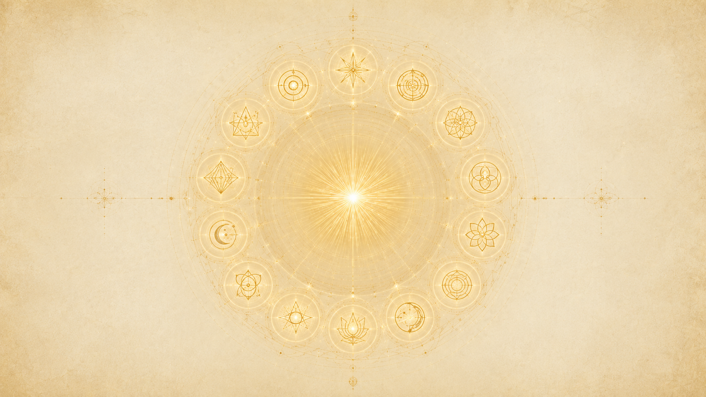

原型心智是什麼:這個造物之神寫下的深層藍圖
「原型心智,可以被定義為這個行星球體的造物之神(Logos)所特有的那個心智。」

要理解原型心智,得先區分兩層心智。Ra 說有一個「偉大的宇宙全心智(the great cosmic all-mind)」,那是一切創造共通的、最普遍的意識底層。而原型心智不等於它——原型心智是這一個造物之神在那片共通底層之上「個別寫下」的版本。Ra 的原話是:它「不像偉大的宇宙全心智,它所包含的,是這個造物之神樂意拿來作為對偉大宇宙存在性之精煉(refinements)的那些素材」。換句話說,宇宙全心智是通用底稿,原型心智是這位 Logos 為自己這片創造、為這裡的演化加上去的「精修版藍圖」。
那麼這份藍圖裡裝了什麼?Ra 給的範圍極大:「原型心智,就是那個包含一切可能影響心智或經驗之面向的東西。」也就是說,凡是會在心智層面、在經驗層面起作用的根本樣式,都被收進這份藍圖裡。它不是某幾個具體的念頭或記憶,而是「念頭與經驗會依循的根本形狀」。
提問者曾把原型理解成造物者本身的某種顯化,Ra 認可這個方向但立刻加上限定:「說原型是『唯一無限造物者的一些部分』,或是『其面容的一些面向』,這說得很好。」原型確實是造物者那張臉的不同側面;但 Ra 提醒,這些原型在它們「生成性的能量」上是恆定的,顯化到每個尋求者身上時,卻會依那個人最在意的東西而呈現出不同樣貌。
這份藍圖的來源,是造物之神對「自由意志」的深度沉思。Ra 在談演化史時說,第一個把「完整意義的自由意志」植入自己諸子造物之神(sub-Logoi)裡的那位造物之神,正是「因為深度沉思……我們稱之為『重要者』(significators)的那些概念」而走到這一步的。原型心智不是憑空被設定的規則,而是 Logos 為了讓自由意志能在演化中真正運作,所沉思、所書寫出來的深層結構。
用大家比較熟悉的話來對照:這很接近榮格所說的「集體無意識」——一套不屬於某個人、卻被所有人共享、深埋在意識根部的原始樣式(原型)。Ra 自己也把這些原型放在「心智的根部(roots of the mind)」:「它們存在於心智的根部,正是從這個資源裡,它們的引導性影響與主導動機(leitmotifs)可以被追溯出來。」我們日常的念頭與選擇,往上溯源,都能追到這些深埋在根部的原型。
為什麼要研究它:精煉行家的工作
「原型心智,是心智複合體裡一個偉大而根本的部分,是它最基本的元素之一,也是尋求唯一無限造物者者最豐富的資訊來源之一。」
原型心智不是學術知識,而是修練的工具。Ra 把它定位得很高:它是心智複合體「最基本的元素之一」,也是尋道者「最豐富的資訊來源之一」。研究它,是已經走到相當階段的「行家(adept)」才會著手的工作——因為它處理的不是日常事務,而是意識最底層的運作機制。
它是一套「給演化用的藍圖」,不是一套教條
Ra 反覆強調,原型不是給你照背的教義,而是「演化本性的一張藍圖或建築結構(a blueprint or architecture of the nature of evolution)」。它描述的是「演化是怎麼進行的」這件事的底層架構。當年埃及的行家被授予塔羅圖像,目的就是讓他們「藉由理解這些原型藍圖,來加速自己的個人演化」。所以研究原型心智,本質上是在研究「我這趟演化的內在地形圖」。
行家要做的,是「成為」每一個原型
Ra 對行家的要求很具體:不是去「知道」原型,而是去「成為」原型。祂鼓勵入門者「學會去成為每一個原型,而且最重要的是,要去知道——在你們的幻象裡盡可能地知道——什麼時候採用某個原型的『人格面具(persona)』,在靈性上或形上學上會是有幫助的」。也就是說,行家學的是一種「調用能力」:在某個處境裡,意識到「現在該調用哪個原型來幫我」。
Ra 還說,真正的進階工作必須超出書本:「更接近圓滿的做法是,行家走到任何被寫下來的東西之外,去建立起這樣的對應關係——讓那個原型能夠隨意志被召喚(can be called upon at will)。」書面系統(塔羅、占星、生命之樹)只是入口,終點是把原型內化成自己能隨時動用的內在資源。
它如何幫助修練——深心的旋律被帶到表面
Ra 用一個很美的說法描述它的作用:研究原型,能讓「深心(deep mind)裡那些深沉的輓歌與歡快的小調,被成功地帶到前面來,以強化、清晰表達並提升魔法人格(magical personality)的某個面向」。原型心智是「深心的一部分」,它「形塑著思想過程」;把它的內容有意識地提取上來,就能用來打磨那個在修練中逐漸成形的「魔法人格」。
重要警告:不可把原型直接搬進日常行動
這是 Ra 對研究者最嚴肅的提醒。原型的「受控使用(controlled use)」是「在自我之內進行的、用於自我的極化」——它是內在工作。Ra 警告:「當原型被翻譯成個體被顯化出來的日常行動、卻不顧及魔法上的恰當性時,最大的扭曲就可能發生。」原型不能被當成行為指令直接拿去做;它要先在內在被消化、被恰當地安置,而不是讓它跳過內在工作、直接演成外在動作。
心/身/靈三組,各七個原型——共 21,加第 22「抉擇」
「那些你們稱為塔羅的概念複合體,因此分成三組各七個:心智循環,一到七;身體複合體循環,八到十四;靈性複合體循環,十五到二十一。」
建造的次序:先心、再身、後靈
整套原型心智的設計,Ra 說背後有一個哲學:「這個哲學是去創造一個基礎——首先是心智的,然後是身體的,然後是靈性複合體的。」於是 22 個概念複合體被排成三組各七個。Ra 講得很清楚:第一到第七是「心智循環」,第八到第十四是「身體複合體循環」,第十五到第二十一是「靈性複合體循環」。每組七個,三組共 21 個。
第 22 個:抉擇
剩下最後一個,Ra 說:「最後一個概念複合體,最好稱之為『抉擇(The Choice)』。」這就是把整個原型心智章節,與「服務他人 vs 服務自己」那一章勾連起來的地方——第三密度全部的功課就是抉擇,而原型藍圖的最後一塊,正是這個抉擇本身。Ra 還指出它的特殊性:其他原型每個人都會、也應該、也必須用自己的方式去感知,「只有第二十二個,『抉擇』,是相對固定而單一的」。別的原型因人而異,抉擇卻對所有人是同一件事。
三組之間互相對應——同位置的原型彼此呼應
三組不是各自獨立的,它們之間有對位關係。Ra 說:「在八度中相同位置的心、身、靈之間,是有關係的——例如,一、八、十五——以及每個八度之內的種種關係,這些對於追求『抉擇』都是有幫助的。」也就是說,心智的第一個原型(母體)、身體的第一個原型、靈性的第一個原型(1、8、15),它們是同一個「母體」主題在三個層面上的變奏。後來 Ra 教導時就是照這種對位來分組講解:「一、八、十五;二、九、十六;三、十、十七;四、十一、十八;五、十二、十九;六、十三、二十;七、十四、二十一;二十二。」
原本只有九個原型——自由意志擴充了它
這套結構不是一開始就這麼複雜。Ra 揭露了一段演化史:「原本有九個原型,以及許多陰影。」最初心、身、靈「各自包含,並在母體(Matrix)、賦能者(Potentiator)、重要者(Significator)的統御之下運作」——三個層面各三個核心原型,共九個。是後來「遮蔽之幕(veil)」與自由意志被引入,把這個簡樸的結構大幅擴充、細分,才長成今天的七階系統。Ra 說這套「七的系統,是我們這個八度中任何造物之神、透過任何實驗,所發現過的、表達得最精細的系統」。
原型首先是「物自身」
Ra 提醒研究者,別急著把原型套進關係網裡解讀,要先把每個原型當成獨立的存在來沉思:「原型,首要而且最深刻地,是『物自身(things in themselves)』;沉思它們,以及它們彼此之間最純粹的關係,應該是研究原型心智最有用的基礎。」先各自看清,再看關係——這是 Ra 給的方法論次序。
塔羅大阿爾克那:原型心智的圖像記錄
「你可以選擇塔羅,連同它那二十二張所謂的大阿爾克那。」
三套研究系統,塔羅是其中一套
Ra 說,要接近原型心智,有幾套被發展出來的研究系統可以選。祂列出三套:「你可以選擇占星——十二個星座(你們這樣稱呼這些行星能量網的部分),以及所謂的十顆行星。」「你可以選擇塔羅,連同它那二十二張所謂的大阿爾克那。」「你可以選擇研究所謂的生命之樹,連同它的十個質點(Sephiroth)與站點之間的二十二種關係。」Ra 建議:「值得去探究每一套學科——不是當個淺嘗輒止的票友,而是當一個尋找試金石的人,一個想要感受到磁石那股拉力的人。」
塔羅大阿爾克那為什麼正好是原型的記錄
塔羅大阿爾克那剛好二十二張,與「21 個原型 + 抉擇」一一對應。Ra 確認,這套圖像是當年被刻意設計、傳給埃及行家的記錄工具,讓他們能藉著凝視這些圖像、理解背後的原型藍圖,來加速自己的演化。塔羅在這裡的角色,不是算命的牌,而是「把不可見的原型用可見圖像保存下來」的一份記錄。
圖像是「指引」,不是「邊界」
Ra 對這些圖像的態度很重要:它們是線索,不是教條。談到原型的圖像時 Ra 說,造物之神「並沒有帶著邊界(boundaries)來提供這些圖像,而只是作為指引(guidelines),意在幫助行家」。所以每張牌上的每個元素都值得沉思,但不該被當成唯一正解。Ra 也強調個人化:「每個心/身/靈複合體都將、也應該、而且的確必須以它自己的方式,去感知每一個原型。」
研究的紀律:守住一套圖像,別換來換去
Ra 給了一個很實際的提醒:研究塔羅要講「恆常(constancy)」。「最有效率地依循『教/學』之動態運作的原則,就是恆常。」祂建議行家固定用一套塔羅圖像,而不要在不同版本之間跳來跳去——因為在與原型圖像工作時,維持同一套圖像能強化學習的過程。換版本會打斷那條正在被建立的內在對應關係。
圖像會被「玷污」——要留意失真
Ra 在逐一講解每張牌時,常會指出原始圖像在歷代流傳中被加入了不屬於原始設計的元素(例如某些裝飾、某些被後人附會上去的符號)。所以研究時不只要讀懂正確的符號,也要學會辨認哪些是後來摻進來、會誤導理解的失真。這也呼應了前面那句:行家最終要「走到任何被寫下來的東西之外」,自己建立起與原型的直接對應。
七階概念:母體 → 賦能者 → 催化劑 → 經驗 → 重要者 → 轉化 → 偉大之道
每組七個原型不是七個並列的角色,而是一條會走的「路」——從尚未被觸動的潛能,一路到完成轉化、奔向新環境的偉大之道。
三組(心、身、靈)各自的七個原型,都遵循同一套七階的命名與意義。以下用「心智」這一組為主線來說明這條路的形狀;身體與靈性那兩組,是同一條路在各自層面上的變奏。
一、母體(Matrix):一切從這裡出發的「未被餵養的意識」
母體是起點。Ra 說:「心智的母體,是一切由之而來的東西。它本身不動,卻是在潛能化中啟動一切心智活動的那個啟動者。」它代表的是「未被餵養的意識心智(the unfed conscious mind)——除了意識本身之外,沒有任何資源的心智」。它是一隻伸出去的手,主動「去夠取」,但在還沒被潛能化之前,它要夠取的東西對它是鎖著的。Ra 描述那隻手:「那隻手,學生啊,伸向那個——在它未被潛能化的影響之外——對它鎖著的東西。」母體在三層的對應分別是行家的意識心智、身體、與靈。
二、賦能者(Potentiator):意識潛入的那片「海」
母體本身不動,真正讓它「活起來」的是賦能者。Ra 說:「心智的賦能者,是那個可以被看成『海』的偉大資源——意識愈來愈深地浸入其中。」這是無意識、潛意識的領域。Ra 用詩意的話形容:「無意識,確實可以被詩意地描述為『女祭司』,因為它是心智的賦能者;而作為心智的賦能者,它就是那個潛能化一切經驗的原則。」母體是主動伸手的「陽性原則」,賦能者是靜靜等待著被夠取的「陰性原則」——這裡的陰陽不是生理性別,而是「去夠取」與「等待被夠取」這兩種根本姿態。
三、催化劑(Catalyst):被丟進來、要被處理的經驗材料
有了會動的母體與供給它的賦能之海,接著進來的是催化劑——生命丟給你的種種遭遇。Ra 對催化劑的劃分很清楚:「由身體處理的催化劑,就是身體的催化劑;由心智處理的催化劑,就是心智的催化劑;由靈處理的催化劑,就是靈的催化劑。」而且關鍵在於:「你所感知的一切,都是在無意識層面被當作催化劑來感知的」——等到你有意識地去體會它時,「那個催化劑已經被過濾、穿過了那道幕」。催化劑進來時是未經導向的原料,要靠下一階去消化它。
四、經驗(Experience):催化劑被消化後沉澱成的東西
催化劑被處理過、被消化之後,就成為「經驗」。這一階是把外來的原料內化、轉成自己的一部分。它是母體、賦能者、催化劑三者交互作用後,在意識裡留下的沉澱。經驗的累積,逐步把一個原本「未被餵養」的母體,餵養成有內容、有取向的存在。
五、重要者(Significator):那個正在被塑造的「自我」,而且是個複合體
重要者代表的是經歷過前四階之後、那個正在成形的「自我」。Ra 對它最重要的一句提醒是:重要者必須被當成「複合體」來理解,而不是單一的東西——因為心/身/靈本身就是「一個能量的複合體」。Ra 說:「重要者,是已經透過意識與無意識那些微妙的運動而變得複雜(complex)的那個原始原型。」「要『複雜』,就是要由不只一個特徵性的元素或概念所構成。」最初九個原型時代的重要者是「簡單」的,加了遮蔽之幕之後,它被意識與無意識的來回拉扯弄得複雜了。Ra 還指出,重要者「與靈締結了一份盟約,在某些情況下,它會透過行家的思想與行動把靈顯化出來」。
六、轉化(Transformation):必須放下一個原則,極性才能成立
轉化是這條路的關鍵跳躍點。它對應塔羅的第六張(Ra 在心智組討論時與「戀人」的意象相關),核心是「抉擇」如何在這個複雜的自我身上發生。Ra 描述那個畫面:意識實體同時握著兩邊(兩種深心的面向),「它們在歇息中。意識實體握著兩者,將會把自己轉向這一邊或那一邊,或者也可能前後搖擺,先朝這邊、再朝那邊地搖,結果沒能達成『轉化』」。Ra 點出轉化的條件:「為了讓心智的轉化發生,有一個統御深心使用的原則必須被放棄。」搖擺不定者無法轉化;真正的轉化,是意識的意志終於明確倒向一邊,完成極化。
七、偉大之道(Great Way):完成後奔向新環境
偉大之道是每組七階的終點,對應塔羅的「世界」。Ra 用「戰車」的意象描述它:「雖然這輛戰車是有輪子的,它卻不是靠某種物理的、可見的挽具,被那拉動它的東西所牽引。」它被一種看不見的力量拉著前進。Ra 解釋這一階的特殊性質:「心智、身體或靈的『偉大之道』,牽引的是那個新的環境——也就是遮蔽過程所造成的新建築結構——並因此被浸入時空(time/space)那無垠無際的浩瀚水流中。」Ra 還用獅身人面像(sphinx)的腿來談「歇息」與「前進」:「在時間裡歇息是可能的,前進也是可能的。若試圖混合兩者,那條向上、移動的腿,就會被那條彎曲的腿大大地拖累。」偉大之道是把整條路的成果,帶進更深的時空維度。
心智七原型逐一概覽:從魔法師到世界
Ra 與提問者花了最多時間逐張拆解「心智」這一組。以下把這七張牌的圖像與意義走過一遍,因為一旦看懂這一組,身體與靈性兩組就是同一條路的變奏。
1 母體 · 魔法師(The Magician)
魔法師代表意識心智,尤其代表「意志(will)」。Ra 說:「自我意識的實體充滿了那即將到來之物的魔法。」它可以被放在第一位來考慮,「因為心智是靈性演化學生所要發展的第一個複合體」。圖像裡那隻伸出去的手,象徵未被潛能化的意識去夠取它還搆不到的東西;而「意志的概念,確實從『心智母體』這個圖像的每一個切面裡傾瀉而出」。
2 賦能者 · 女祭司(The High Priestess)
女祭司代表潛意識、無意識——心智的賦能者。Ra 在拆解這張牌的圖像時確認了好幾個元素的意義。關於那道幕:「這道幕代表意識與潛意識之間、也就是母體與賦能者之間的幕」,Ra 答「這完全正確」。關於兩根柱子:它們代表極性,「這個幻象的極性,以極性作為它的基礎」,一明一暗,而種種經驗「可以用任一極性去接近、去看待、去運用」。關於生命之符(crux ansata,即安卡十字):「生命之符是正確的符號」,代表「生命或靈使物質活躍起來」。關於葡萄:它代表「潛意識心智的豐饒」,Ra 答「這是正確的」,並補充那件斗篷為這份豐饒的活動提供了「巨大的保護」。
3 催化劑(The Catalyst of the Mind)
第三張處理的是「進來的經驗材料如何被心智接收」。如前一節所述,催化劑在被有意識體會之前,早已穿過了那道幕、在無意識層面被處理過。這張牌講的就是這份「未經導向的原料」進入意識場域的那一刻——它還沒有被定性為痛苦或喜悅,端看接下來怎麼被消化。
4 經驗(The Experience of the Mind)
第四張是催化劑被消化、沉澱成「經驗」的階段。它把外來的衝擊轉成內在的養分,逐步餵養那個原本「未被餵養」的母體。這一階是前三張交互作用後的成果結晶。
5 重要者 · 戀人(The Lovers)
第五張是那個被經驗塑造出來、正在成形的複雜自我。Ra 在這張牌上講「心智極性的拉力」:可以拿學生已經累積的、關於「意識(以男性為例)與無意識(以女性為例)」的理解來檢視這份拉力。畫面裡兩位女性身影代表深心的不同面向,她們靜止不動、邀請卻不強迫;而那個有意識的實體握著兩者,由它的意志決定要倒向哪一邊。Ra 把肩膀與交叉手肘構成的三角形與「轉化」連起來:「由意識的肩膀與交叉的手肘所構成的那個三角形,是一個要與轉化聯繫起來的形狀。」
6 轉化 · 牌六(與戀人/抉擇意象相連)
第六張是抉擇真正落定的地方。Ra 描述那個搖擺的危險:意識實體「握著兩者,將會把自己轉向這一邊或那一邊,或者前後搖擺……結果沒能達成轉化」。而轉化的條件很硬:「為了讓心智的轉化發生,有一個統御深心使用的原則必須被放棄。」不放棄搖擺、不肯明確選邊,就停在轉化的門口進不去。
7 偉大之道 · 世界(The World)
第七張是這組的終點。如前一節所述,Ra 用「不靠可見挽具卻被拉動的戰車」與「獅身人面像的雙腿」來描述它:完成轉化的意識被一股看不見的力量牽引,奔向遮蔽過程所造出的新環境,並被浸入時空那無垠的水流。它代表整條心智之路走完一輪後的展開與奔赴。
如何在生活中運用原型心智
「原型的受控使用,是在自我之內、為了自我的極化而做的……原型心智是深心的一部分,它形塑著思想過程。」
先各自沉思,再看關係
Ra 給的入門次序是:先把每個原型當成「物自身」獨立沉思,看清它本身是什麼,再去看它與其他原型之間「最純粹的關係」。這是研究原型心智「最有用的基礎」。急著套關係網、跳過對單一原型的深度沉思,地基會不穩。
守住一套系統與一套圖像
選定一套研究系統(占星、塔羅、生命之樹其一),並且「不是當個淺嘗輒止的票友」,而是認真鑽研。在塔羅上,Ra 特別強調「恆常」:固定用同一套圖像,別在不同版本間跳換,因為與原型圖像工作時,維持同一套圖像能讓那條內在對應關係穩定地長出來。
學會「成為」原型,並判斷何時調用
運用的核心,是把原型內化成可隨意志召喚的內在資源。Ra 要行家「學會去成為每一個原型」,並且「最重要的是,要去知道什麼時候採用某個原型的人格面具,在靈性上會是有幫助的」。譬如在需要主動開創時調用母體/魔法師的意志,在需要沉入內在資源時調用賦能者/女祭司的承接。最終要「走到任何被寫下來的東西之外」,讓原型能「隨意志被召喚」。
它的作用域是「內在」,不是「外在行為」
這是運用上最重要的界線,Ra 講得很重。原型的「受控使用」是「在自我之內、為了自我的極化」而進行的內在工作;原型心智「是深心的一部分,它形塑著思想過程」。但 Ra 警告:「當原型被翻譯成個體被顯化出來的日常行動、卻不顧及魔法上的恰當性時,最大的扭曲就可能發生。」也就是說,運用原型是用來調整自己內在的取向與覺知,不是拿來當外在行動的劇本直接照演。
提取深心的旋律,打磨魔法人格
運用得當時,原型能把「深心裡那些深沉的輓歌與歡快的小調」帶到表面,用來「強化、清晰表達並提升魔法人格的某個面向」。換句話說,它是一面內在的鏡子與一組內在的工具:幫你把潛意識深處本來模糊的東西,清晰地認出來、整合進那個在修練中逐漸成形的自己。
最終仍是為了「抉擇」
別忘了整套結構的指向。三組之間的對位關係、每組的七階,Ra 說都「對於追求『抉擇』是有幫助的」。研究與運用原型心智,終究不是為了博學,而是為了把那個第三密度唯一真正的功課——服務他人或服務自己的抉擇——做得更清醒、更純粹、更不搖擺。